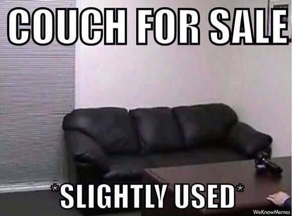

Introduction to WC
Created @boyney123
Who am I?
Lets go back...
Nothing really changes...

Things were simple...
TODO: Examples of old websites
Browsers matured
jQuery
jQuery was abused
jQuery added jQuery UI
Examples of jquery widgets
Keep adding more and more...

Junk and huge applications
Our HTML, CSS can become messy...FAST
Example : Gmail
Tidy up
'Its easy to write code a browser understands. Good developers write code people can understand'
- Addy Osmani
What If?
What I will cover?
- What are web components?
- What problems do they solve?
- The building blocks of web components
- How can you use them?
- Thinking Components
- Code Examples
- Extra Resources
What are they?
Web components are a set of emerging standards that allow us to extend HTML with our own vocabally
What does it solve?
Select Element
Okay so whats the problem?
Lets look at navigation
TODO: Differnt exdamples of how we could do a tab system (img confused person)?
Repeating ourselfs
This is valid (show valid markup for nav-bar) : Code EXAMPLE
Common patterns in software
- Keep things simple
- Modular
- Encapsulated
- Single Responsibility
What is Web Components build up from?
Web components is simular to a team...
Web Components are build from
S.H.C.T
Four Building Blocks
- S - Shadow DOM
- H - HTML Imports
- C - Custom Elements
- T - Templates
S.H.C.T
Shadow DOM
Example : Shadow DOM
DemoKey Facts : Shadow DOM
- DOM and CSS Scoping
- Allows us to design apps in small chunks with a guarante
- You can use class names and IDs within the scope without conflict
- Powerful - No more !important from third parties
S.H.C.T
HTML Imports
Example : HTML Import
<link rel="import" href="ctm-speech-bubble.html">
Key Facts: HTML Import
- Bundle JS/HTML/CSS together
- Dependency management to web components
- All depdencies are replaced with a simple import
- Great to share and use components
S.H.C.T
Custom Elements
Example : Custom Element
<ctm-speech-bubble title="Hello" body='Hello and welcome to my brownbag session on Web Components'></ctm-speech-bubble>
<ctm-nav-bar tabs='[{"name": "Home"}, {"name": "Motor"}]'>
</ctm-nav-bar>
Demo
Key Facts: Custom Elements
- Readable
- Meaningful HTML
- DSH
Sofa Sales..
D.S.H
Domain Specific HTML
<ctm-speech-bubble title="Hello" body='Hello and welcome to my brownbag session on Web Components'></ctm-speech-bubble>
<ctm-nav-bar tabs='[{"name": "Home"}, {"name": "Motor"}]'>
</ctm-nav-bar>
S.H.C.T
Templates
Example : Template
<template>
<link rel="stylesheet" href="david-boyne.css" />
<img style="border-radius: {{radius}}%; width: {{width}}%" src="./david-boyne.jpg" alt="">
</template>
Demo
Key Facts : Templates
- Parsed not rendered - does nothing until you use it
- Elements inside are not requests/used until its needed (i.e img, video tag)
- Out of scope - DOM doesnt even look at at
Browser Support?
300 Million...
What about old browsers?
Screw old browsers
Whos using Web Components today?
- GitHub uses custom elements local-time using polymer
- ChromeOS keyboard is a web component
- Media player in ChromeOS is a web component
How can you use Web Components today?
- Vanilla JS
- Polymer (Google)
- X-Tags (Mozilla)
- Bosonic (?)
More resources
Summary
The Past, Future and Evolution
- Thinking Component
- Change the way we think about writing HTML, CSS and JavaScript
- Don't recreate the wheel
- Get more done with less
- More pictures of me wasted...
HTML Component
//Write up example of a widget we use today
<div class="toolbar">
<ul class="toolbar-item-wrapper">
<li class="toolbar-item">Spanner</li>
</ul>
</div>